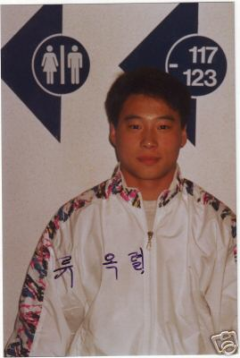

You Ok Youl (KOR)
1991 and 1992 World V
Champion
1992 Olympic V Bronze Medalist

Medal Total
Olympic Games: 1
Bronze
World Championships: 2 Gold, 1 Bronze
Competition Results
1989
World Championships: 15th Team
1990
Asian Games: 9th AA, 5th R, 6th V, 8th FX
Chunichi Cup: 15th AA, 3rd V, 4th FX
Tokyo Cup: 1st V, 1st R, 2nd FX
1991
Chunichi Cup: 10th AA, 1st V, 4th FX, 6th R
DTB Cup: 13th AA, 1st V, 2nd FX, 6th R
Gander Memorial: 3rd AA
Swiss Cup Mixed Pairs: 13th Team
Tokyo Cup: 1st FX, 1st V, 5th R
World Championships: 6th Team, 1st V
1992
Chunichi Cup: 3rd AA, 2nd FX, 5th V
DTB Cup: 1st V, 2nd FX, 6th R
KOR-JPN Dual Meet: 3rd AA
Olympic Games: 8th Team, 23rd AA, 3rd V, 4th FX
Pacific Alliance Championships: 1st AA, 1st FX, 1st R, 1st V
Tokyo Cup: 1st FX
World Championships: 1st V, 8th FX
1993
World Championships: 3rd V, 8th R
1994
Asian Games: 2nd Team, 2nd R, 8th FX
DTB Cup: 8th V (prelims)
World Championships (Brisbane): 5th V
World Championships (Dortmund): 7th Team
1995
Chunichi Cup: 7th AA, 3rd V
Kawasaki Cup: 3rd V, 6th FX, 6th R, 7th HB, 9th PH
This page was created on May 20,
2006 and was last updated on May 17, 2010.
© Gymn Forum